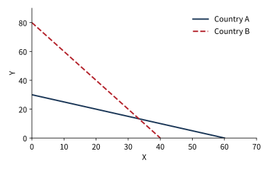
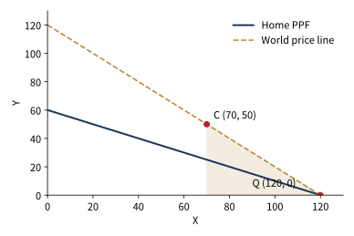
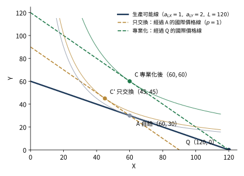

首頁 › 課程筆記 › 第 2 章 這一章在問什麼 ：兩個國家的生產技術不同，為什麼會貿易？更進一步，如果某一國兩樣東西都做得比別國差，它還有貿易的機會嗎？李嘉圖（David Ricardo）的答案是可以：貿易的基礎不是「誰做得比較好」（絕對利益），而是「誰做這件事放棄得比較少」（比較利益）。
為什麼重要 ：這是整門課的起點。之後的特定要素 模型、H–O 模型都沿用這一章的工具：生產可能線、相對價格、貿易三角形、貿易利得；期中考約四分之一的題目在考這一章的計算。
本章的脈絡 ：
步驟
在做什麼
對應節
1
貿易理論要回答哪些問題；重商主義為什麼錯
2.1
2
亞當斯密的絕對利益：用數字看分工為什麼能增產
2.2
3
李嘉圖的比較利益：兩樣都輸也能分工
2.3
4
把數字寫成模型：假設、生產可能線
2.4
5
自給自足時，價格怎麼決定
2.5
6
開放貿易：誰生產什麼、價格落在哪裡、貿易三角形
2.6
7
貿易利得從哪裡來：交換利得與專業化利得
2.7
8
工資怎麼調整，讓兩國都有東西可賣
2.8
9
實證、常見誤解、模型的貢獻與限制
2.9
模型簡稱「2×2×1」：兩個國家、兩種商品、一種生產要素（勞動）。
老師上課補充 這學期的五個模型 老師一開始把這學期要講的模型數清楚：李嘉圖模型、要素比例（H–O）模型、特定要素模型，加上新貿易理論裡的兩個模型，一共五個。各模型的切入角度不同：李嘉圖看勞動生產力，H–O 看資源秉賦 ，新貿易理論看規模經濟 。老師也提醒，不能拿一個模型去解釋它已經假設排除的現象。
2.1 貿易理論要回答的問題與重商主義六個問題
每一個貿易理論都要回答同一組問題，差別只在它給的答案。老師說這六個問題是用來檢查模型的清單：
國際貿易為什麼發生？
一國出口什麼、進口什麼（貿易型態，pattern of trade）？
貿易如何改變生產、消費與價格？
有沒有貿易利得（gains from trade）？
誰的所得增加、誰的減少（所得重分配）？
貿易和經濟成長怎麼互相影響？
第一題的答案就是各模型的分野：李嘉圖說是勞動生產力不同，H–O 說是資源秉賦不同，特定要素模型說是特定要素的存量不同，新貿易理論說是規模經濟。「貿易利得」指的是福利的變化，不是出口廠商的利潤，也不是貿易順差。
重商主義：財富就是金銀
重商主義 （mercantilism）大約從 1500 年流行到 1750 年，有三個主張：
一國的財富反映在它擁有多少貴金屬 （金銀）。
世界的資源（金銀總量）是固定的。
所以貿易是零和遊戲 （zero-sum game）：一國用順差多賺到的金銀，就是別國少掉的金銀。
推論怎麼來：兩國交易時彼此不收對方的貨幣，差額只能用黃金結算，順差國的黃金增加必然來自逆差國的減少。對應的政策就是鼓勵出口、限制進口：用關稅 擋進口，用補貼推出口。
休姆：順差不能永久累積
休姆 （David Hume）的物價－金幣流動機制（price–specie-flow mechanism）把重商主義漏掉的後半段接著算完：
順差 → 黃金流入。
黃金不能直接買東西，民間把黃金換成本國貨幣 → 貨幣供給增加。
貨幣變多 → 工資與物價上漲。
本國商品變貴 → 出口減少、進口增加 → 順差縮小、甚至轉為逆差。
逆差 → 黃金外流 → 貨幣減少 → 物價回跌 → 競爭力恢復。
所以順差和逆差會循環，不會永久累積。
亞當斯密：財富是生產能力
亞當斯密 （Adam Smith）把財富的定義從「金庫裡有多少金銀」（存量）改成「一年能生產多少可以享用的東西」（流量，用今天的話就是 GDP）。分工若能讓同樣的資源生產更多東西，兩國就有新增的產出可以分享，貿易就是正和遊戲 （positive-sum game）。
即：重商主義在數金庫，古典學派在數產線。
老師上課補充 一加一等於二，流傳兩百五十年 老師形容重商主義的看法流傳了大約 250 年，期間幾乎沒有人懷疑，「一加一等於二流傳兩百五十年你就不會懷疑」。休姆的機制他用「央行把黃金換成本國貨幣」幫助理解貨幣供給為什麼增加：黃金本身不能拿去買饅頭，一定要先換成錢。
Concept Check：2.1 貿易理論要回答的問題與重商主義 題目依本節內容自編，仿期中考的英文選擇題、讀圖題與計算題，不是老師出的題目。
Under mercantilism, which policy follows most directly from the view that national wealth is the stock of gold and silver?
(A) Encourage exports and restrict imports to run a trade surplus (B) Remove all tariffs so that consumers can buy cheaper goods (C) Specialize according to comparative advantage and trade freely (D) Let the money supply shrink whenever exports exceed imports 顯示解答 中文題意
重商主義認為國家財富就是金銀的存量，下列哪一個政策最直接從這個看法推導出來？
答案 (A) Encourage exports and restrict imports to run a trade surplus
解析
金銀是用貿易差額結算的，要讓金銀流入就要出口多於進口，所以重商主義主張鼓勵出口（補貼）、限制進口（關稅），追求順差。
(A) 正確。
(B) 錯。取消關稅是自由貿易的主張，和重商主義相反。
(C) 錯。這是李嘉圖的主張。
(D) 錯。順差時黃金流入、貨幣增加，這是休姆指出的後果，不是重商主義的政策。
即：把金銀當財富，就會想盡辦法讓金銀只進不出。
According to Hume's price–specie-flow mechanism, what happens after a country runs a persistent trade surplus under a gold standard?
(A) Gold flows out, prices fall, and the surplus grows larger (B) Gold flows in, prices rise, and the surplus shrinks (C) Gold flows in, prices fall, and the surplus grows larger (D) Gold flows out, prices rise, and the surplus shrinks 顯示解答 中文題意
依休姆的物價－金幣流動機制，金本位制度下一國持續順差之後會發生什麼？
答案 (B) Gold flows in, prices rise, and the surplus shrinks
解析
順差 → 黃金流入 → 換成本國貨幣，貨幣供給增加 → 物價上漲 → 本國商品變貴、出口減少、進口增加 → 順差縮小。
(A) 錯。順差時黃金是流入。
(B) 正確。
(C) 錯。貨幣增加會讓物價上漲，不是下跌。
(D) 錯。黃金流向錯了。
即：順差帶來的金銀會推高物價，自己把順差吃掉。
易錯提醒
休姆的重點是「順差不能永久累積」，用來反駁重商主義的零和觀點。
Why did classical economists describe trade as a positive-sum game?
(A) Because the world supply of gold increases when countries trade (B) Because every country runs a trade surplus at the same time (C) Because specialization raises total output from the same resources (D) Because exporting countries take wealth away from importing countries 顯示解答 答案 (C) Because specialization raises total output from the same resources
解析
亞當斯密把財富定義為生產能力。兩國依各自的優勢分工，在勞動總量不變下世界總產出增加，新增的部分可以讓兩國分享，所以是雙贏。
(A) 錯。貿易不會讓黃金總量增加。
(B) 錯。順差與逆差加總為零，不可能所有國家同時順差。
(C) 正確。
(D) 錯。這是零和的觀點。
即：餅變大了，所以大家都可以分得比原來多。
易錯提醒
「正和」講的是總產出增加，不是每個人都一定得利（所得分配是第 3、4 章的問題）。
2.2 絕對利益：亞當斯密絕對利益 （absolute advantage）比較的是生產同一商品所需的投入 ：投入越少，生產力越高，就有絕對利益。
生產一單位所需的勞動（人）
衣服
機器
臺灣
10
200
美國
20
100
衣服臺灣只要 10 人、美國要 20 人 → 臺灣有絕對利益；機器美國只要 100 人、臺灣要 200 人 → 美國有絕對利益。
表裡的數字是「生產一單位要幾個人」，數字越大代表效率越低 。每單位勞動的產量是係數的倒數：10 人做一件，就是每人做 \(\frac{1}{10}\) 件。
分工為什麼能增產：用數字算一次
兩國的勞動總量都不變，只讓工人換部門：
臺灣少做 1 臺機器，釋出 200 人，改做衣服：\(\frac{200}{10}=20\) 件。
美國少做 10 件衣服，釋出 \(10\times20=200\) 人，改做機器：\(\frac{200}{100}=2\) 臺。
世界合計：衣服 \(+20-10=+10\) 件，機器 \(+2-1=+1\) 臺。
兩國都沒有多工作，多出來的 10 件衣服和 1 臺機器純粹來自資源配置的改善 。接著兩國再交換彼此需要的東西，新增的產出由雙方分享。
即：讓每個國家做自己做得快的東西，同樣的人力就能做出更多。
老師上課補充 新增的產出要兩邊都分到 老師強調新增的利益必須分配：如果全部被美國拿走，臺灣沒有理由合作；全部被臺灣拿走，美國也不會合作。由誰拿多少要靠交換比率決定，但只要雙方都分到一些，合作就能持續。老師也當場更正一句口誤：同一國之內的工人是同質的，可以在兩個部門之間轉換；但兩國的工人不同質，所以兩國的生產效率本來就可以不一樣。
絕對利益解釋不了什麼
絕對利益能解釋臺灣從歐洲進口汽車、出口電子產品到東南亞。但它解釋不了：1970 年代臺灣的生產條件樣樣不如美國，卻和美國有緊密的貿易，而且長期順差。照絕對利益的說法，樣樣不如人的國家沒有分工的空間，和事實不符，所以要換一個判斷標準。
即：樣樣輸人還是做成了生意，表示判斷標準選錯了。
Concept Check：2.2 絕對利益：亞當斯密 題目依本節內容自編，仿期中考的英文選擇題、讀圖題與計算題，不是老師出的題目。
甲國生產一單位小麥要 4 人、一單位布要 8 人；乙國生產一單位小麥要 6 人、一單位布要 3 人。若甲國少生產 1 單位布、乙國少生產 1 單位小麥，各自把釋出的人力改去生產自己有絕對利益的商品，世界的小麥與布各淨增加多少？
顯示解答 解析
先判斷絕對利益：小麥甲 4 人 < 乙 6 人，甲有絕對利益；布乙 3 人 < 甲 8 人，乙有絕對利益。
甲少做 1 單位布，釋出 8 人，改做小麥：\(\frac{8}{4}=2\) 單位小麥。
乙少做 1 單位小麥，釋出 6 人，改做布：\(\frac{6}{3}=2\) 單位布。
世界小麥：\(+2-1=+1\)；世界布：\(+2-1=+1\)。
即：工人只是換部門，總產出就兩樣都增加了。
易錯提醒
淨增加要扣掉原本少做的那 1 單位，不是只算新增的 2 單位。
In a table of labor required per unit of output, Country A needs 10 workers per shirt and Country B needs 20 workers per shirt. Which statement is correct?
(A) Country B has the higher labor productivity in shirts (B) Country A has an absolute advantage in shirts (C) Country A must also have a comparative advantage in shirts (D) Country B produces two shirts per worker 顯示解答 中文題意
每單位產出所需勞動的表中，A 國做一件襯衫要 10 人、B 國要 20 人。哪一個敘述正確？
答案 (B) Country A has an absolute advantage in shirts
解析
表中是「每單位要幾個人」，數字越小效率越高。A 國只要 10 人，生產力（每人 \(\frac{1}{10}\) 件）是 B 國（每人 \(\frac{1}{20}\) 件）的兩倍，所以 A 國在襯衫有絕對利益。
(A) 錯。B 國要的人比較多，生產力比較低。
(B) 正確。
(C) 錯。比較利益要看兩種商品的機會成本，只看一種商品無法判斷。
(D) 錯。每人做 \(\frac{1}{20}\) 件，不是 2 件。
即：投入係數越小，生產力越高。
2.3 比較利益：李嘉圖判斷標準換成機會成本
李嘉圖在 1817 年的《政治經濟學及賦稅原理》主張，貿易的基礎不是絕對利益，而是比較利益 （comparative advantage）：一國生產某商品的機會成本 （opportunity cost）比別國低，就對該商品有比較利益。機會成本是「多生產一單位這個，要放棄多少那個」。
把表改成美國兩樣都比較有效率：
生產一單位所需的勞動（人）
衣服
機器
臺灣
25
200
美國
20
100
美國兩樣都只要比較少的人，兩樣都有絕對利益。改算機會成本：
第 1 步 臺灣做 1 件衣服要放棄多少機器？ 多做 1 件衣服要從機器部門抽 25 人，而 1 臺機器要 200 人，所以放棄 \(\frac{25}{200}=\frac{1}{8}\) 臺機器。美國：\(\frac{20}{100}=\frac{1}{5}\) 臺。
第 2 步 比較。 \(\frac{1}{8}<\frac{1}{5}\)，臺灣做衣服放棄得比較少 → 臺灣在衣服有比較利益 。
第 3 步 機器反過來算。 臺灣做 1 臺機器放棄 \(\frac{200}{25}=8\) 件衣服，美國放棄 \(\frac{100}{20}=5\) 件 → 美國在機器有比較利益 。
注意方向反轉：以人數看，臺灣兩樣都比美國多；改以機會成本看，臺灣的衣服 \(\frac{1}{8}\) 小於美國的 \(\frac{1}{5}\)。兩個機會成本互為倒數，一國不可能兩樣都有比較利益。
即：換成「做這個要放棄多少那個」來比，輸贏就換邊了。
老師上課補充 郭台銘請幫傭 老師用郭台銘家裡請幫傭說明機會成本：他打掃也許掃得又快又好，但他打掃的機會成本太高，同樣的時間拿去經營事業價值大得多，所以請人代勞，雙方都划算。請人做不是因為自己做不來，而是自己的時間可以換到更值錢的東西。老師用「天生我材必有用」總結：兩個國家或兩個人之間，一定各有相對擅長的項目。
兩樣都輸，仍然可以增產
臺灣少做 1 臺機器，釋出 200 人，增加衣服 \(\frac{200}{25}=8\) 件。
美國少做 6 件衣服，釋出 \(6\times20=120\) 人，增加機器 \(\frac{120}{100}=1.2\) 臺。
世界：衣服 \(+8-6=+2\) 件，機器 \(+1.2-1=+0.2\) 臺。
臺灣兩樣都沒有絕對利益，分工仍然讓世界兩樣都增產。
雙方都划算的交換比率
臺灣自己做 1 臺機器要放棄 8 件衣服；美國自己做 1 臺機器只放棄 5 件。所以：
臺灣只要用少於 8 件 衣服就能換到 1 臺機器，就比自己做划算（臺灣願意付的上限）。
美國要換回多於 5 件 衣服，賣機器才比自己做衣服划算（美國願意收的下限）。
\[5<\frac{P_{\text{機器}}}{P_{\text{衣服}}}<8\qquad\Longleftrightarrow\qquad\frac{1}{8}<\frac{P_{\text{衣服}}}{P_{\text{機器}}}<\frac{1}{5}\]
驗算：1 臺機器換 6 件衣服。臺灣自製 1 臺機器要 200 人，改做 6 件衣服只要 \(6\times25=150\) 人，換回機器省 50 人；美國自製 6 件衣服要 \(6\times20=120\) 人，改做 1 臺機器只要 100 人，換回衣服省 20 人。
即：每個國家自己生產的代價，就是它在交易桌上願意接受的底線。
Concept Check：2.3 比較利益：李嘉圖 題目依本節內容自編，仿期中考的英文選擇題、讀圖題與計算題，不是老師出的題目。
Home needs 3 hours per unit of X and 6 hours per unit of Y. Foreign needs 2 hours per unit of X and 8 hours per unit of Y. Which statement is correct?
(A) Home has a comparative advantage in X because 3 < 6 (B) Foreign has a comparative advantage in Y because it needs fewer hours for X (C) Foreign has a comparative advantage in X; it gives up 0.25 Y per X (D) Home has comparative advantages in both goods, because 3 + 6 < 2 + 8 顯示解答 中文題意
本國生產一單位 X 要 3 小時、Y 要 6 小時；外國 X 要 2 小時、Y 要 8 小時。哪一個敘述正確？
答案 (C) Foreign has a comparative advantage in X; it gives up 0.25 Y per X
解析
\[\text{本國}\ \frac{a_{LX}}{a_{LY}}=\frac{3}{6}=0.5,\qquad \text{外國}\ \frac{a^*_{LX}}{a^*_{LY}}=\frac{2}{8}=0.25\]
外國做 X 只放棄 0.25 單位 Y，比本國的 0.5 低，外國在 X 有比較利益；本國在 Y 有比較利益（本國 Y 的機會成本 \(\frac{6}{3}=2\)，外國 \(\frac{8}{2}=4\)）。
(A) 錯。3 < 6 是本國國內兩種商品的工時比較，不是跨國的機會成本比較。
(B) 錯。結論和理由都對不上：外國的比較利益在 X。
(C) 正確。
(D) 錯。兩個機會成本互為倒數，一國不可能兩樣都有比較利益。
即：先在各國之內算機會成本，再跨國比較。
易錯提醒
外國做 X 也比較快（2 < 3），但那是絕對利益；判斷比較利益要算機會成本。
甲國生產 1 單位米要 2 小時、1 單位電腦要 40 小時；乙國生產 1 單位米要 4 小時、1 單位電腦要 50 小時。(1) 哪一國在電腦有比較利益？(2) 1 臺電腦換多少單位的米，兩國都嚴格得利？
你的答案 對答案 四捨五入到小數第 1 位，不用打單位與 %
顯示解答 答案 (1) 乙國；(2) 12.5 單位到 20 單位之間（不含兩端）
解析
(1) 電腦的機會成本（以米計）：甲 \(\frac{40}{2}=20\) 單位米，乙 \(\frac{50}{4}=12.5\) 單位米。乙比較低，乙在電腦有比較利益，甲在米有比較利益。
(2) 乙自己做 1 臺電腦放棄 12.5 單位米，賣電腦至少要換回多於 12.5；甲自己做 1 臺電腦要放棄 20 單位米，用少於 20 單位米換到 1 臺就划算：
\[12.5<\frac{P_{\text{電腦}}}{P_{\text{米}}}<20\]
即：交換比率要夾在兩國自己生產的代價之間。
易錯提醒
等於 12.5 或 20 時，有一國只是沒變差、不是嚴格得利。
A country needs more labor than its trading partner to produce every good. According to Ricardo, what is true?
(A) It cannot gain from trade because it has no advantage in any good (B) It gains only if its wage is equal to the partner's wage (C) It must import every good and export nothing in return (D) It can gain by exporting the good where it lags the least 顯示解答 中文題意
一國生產每一樣商品都比貿易對手需要更多勞動。依李嘉圖的理論，哪一個敘述正確？
答案 (D) It can gain by exporting the good where it lags the least
解析
兩樣都沒有絕對利益，但落後的程度不同：落後最少的那一樣，機會成本比較低，就是它的比較利益。它的低生產力會反映在比較低的工資上，所以仍然可以在那一樣上賣得比別人便宜。
(A) 錯。這是絕對利益的推論，正是李嘉圖要推翻的。
(B) 錯。工資會調整到比較低的水準，不需要相等。
(C) 錯。只進口不出口無法維持貿易平衡。
(D) 正確。
即：沒有一樣贏，也一定有一樣輸得比較少。
易錯提醒
期中考第 6 題就是這個觀念，用 relative rather than absolute costs 的說法出現。
2.4 模型的假設與生產可能線把數字寫成符號
用 25、200、20、100 這些數字只能說明一次概念，要推出工資區間、價格範圍、福利分解，必須寫成符號與方程式。
假設 ：
兩國：本國 H、外國 F（外國的變數加星號 \(*\)）。兩種商品 X、Y。唯一的投入是勞動，總量 \(L\)、\(L^*\) 固定。
\(a_{LX}\)、\(a_{LY}\)：本國生產一單位 X、Y 所需的勞動（勞動投入係數 ），是常數。外國是 \(a^*_{LX}\)、\(a^*_{LY}\)，兩國可以不同。
勞動市場完全競爭、充分就業；勞工可以在國內兩部門間自由移動，不能跨國移動。
商品市場完全競爭；自由貿易下沒有關稅與運輸成本。
為什麼要這些假設 ：每一條假設都擋住一條貿易管道。投入係數固定（做兩件就剛好用兩倍的人）＝固定規模報酬，擋住規模經濟造成的貿易；完全競爭擋住獨占寡占造成的貿易。其他管道都擋住之後，模型裡若仍出現貿易，就只可能來自唯一還被允許不同的那一項：勞動生產力 。
老師上課補充 其他條件不變：學歷與收入、維他命 C 與老鼠 老師用兩個例子說明為什麼要假設「其他條件不變」。拿一位博士和一位專科學歷的企業經營者比收入，不能用來否定「高學歷對應高收入」，因為兩人的產業、職位、經歷都不同。檢驗維他命 C 能不能讓老鼠跑得更快，若隨便抓大小不一的老鼠分組，結果只會反映體型差異；要取同一隻母鼠生的幼鼠再分組。經濟學的「其他條件不變」就是實驗組與對照組的概念。
生產可能線
第 1 步 寫出勞動的限制。 X 部門用的勞動是 \(a_{LX}Q_X\)（每單位要 \(a_{LX}\) 人、做 \(Q_X\) 單位），Y 部門是 \(a_{LY}Q_Y\)。兩者相加是整個經濟的勞動需求，等於勞動供給 \(L\)（充分就業）：
\[a_{LX}Q_X+a_{LY}Q_Y=L\]
第 2 步 解出 \(Q_Y\)。 把 X 用的勞動移到右邊，再除以 \(a_{LY}\)：
\[Q_Y=\frac{L}{a_{LY}}-\frac{a_{LX}}{a_{LY}}\,Q_X\]
第 3 步 讀截距。 全部做 X：\(Q_X=\frac{L}{a_{LX}}\)（橫軸截距）；全部做 Y：\(Q_Y=\frac{L}{a_{LY}}\)（縱軸截距）。
第 4 步 讀斜率。 \(\dfrac{dQ_Y}{dQ_X}=-\dfrac{a_{LX}}{a_{LY}}\)。負號表示多做 X 必須少做 Y；絕對值 \(\frac{a_{LX}}{a_{LY}}\) 就是多做一單位 X 要放棄的 Y ，也就是 X 的機會成本。
為什麼是直線 ：投入係數固定，而且只有一種同質的勞動，每移一個工人換到的產量都一樣，機會成本不變，生產可能線（production possibility frontier, PPF）就是直線。經濟學原理裡凹向原點的生產可能線，是因為機會成本遞增；下一章特定要素模型的生產可能線就是彎的。
即：生產可能線的位置代表國家多大，傾斜代表它擅長哪一樣。
易錯提醒 截距大小不等於比較利益 一個小國的生產可能線整條都在大國裡面，仍然可以在某一樣商品上有比較利益。截距只反映勞動總量與生產力的規模；比較利益要看斜率 。
Concept Check：2.4 模型的假設與生產可能線 題目依本節內容自編，仿期中考的英文選擇題、讀圖題與計算題，不是老師出的題目。
本國有 240 小時勞動，\(a_{LX}=3\)、\(a_{LY}=4\)。(1) 生產可能線的兩個截距是多少？(2) X 的機會成本是多少？(3) 生產 40 單位 X 時，Y 最多能生產多少？
你的答案 對答案 四捨五入到小數第 0 位，不用打單位與 %
顯示解答 答案 (1) X 截距 80、Y 截距 60；(2) 0.75 單位 Y；(3) 30 單位
解析
(1) 全部做 X：\(\frac{240}{3}=80\)；全部做 Y：\(\frac{240}{4}=60\)。
(2) \(\frac{a_{LX}}{a_{LY}}=\frac{3}{4}=0.75\)，也等於 \(\frac{60}{80}\)（縱軸截距 ÷ 橫軸截距）。
(3) \(3\times40+4Q_Y=240\Rightarrow 4Q_Y=120\Rightarrow Q_Y=30\)。
即：先扣掉 X 用掉的勞動，剩下的除以 Y 的投入係數。
易錯提醒
斜率是 \(\frac{a_{LX}}{a_{LY}}\)，不是 \(\frac{a_{LY}}{a_{LX}}\)；用截距算是「縱軸截距 ÷ 橫軸截距」。
The figure shows the PPFs of Country A and Country B (X on the horizontal axis). Which statement is correct?

Country A 的生產可能線通過 (0, 30) 與 (60, 0)；Country B 通過 (0, 80) 與 (40, 0)。 (A) Country A has a comparative advantage in Y because its PPF is lower (B) Country B has a comparative advantage in X because its Y-intercept is higher (C) Country B has a comparative advantage in Y; both gain if \(0.5<P_X/P_Y<2\) (D) Neither country gains from trade because the PPFs cross 顯示解答 中文題意
圖中是 A、B 兩國的生產可能線（X 在橫軸）。哪一個敘述正確？
答案 (C) Country B has a comparative advantage in Y; both gain if \(0.5<P_X/P_Y<2\)
解析
X 的機會成本＝縱軸截距 ÷ 橫軸截距：
\[A:\ \frac{30}{60}=0.5,\qquad B:\ \frac{80}{40}=2\]
A 做 X 比較便宜（在 X 有比較利益），B 做 Y 比較便宜（B 的 Y 機會成本 \(\frac{40}{80}=0.5\)，A 是 \(\frac{60}{30}=2\)）。互利的價格區間是兩國 X 機會成本之間：\(0.5<\frac{P_X}{P_Y}<2\)。
(A) 錯。線的高低是規模，比較利益看斜率；A 的比較利益在 X。
(B) 錯。B 的線比較陡，做 X 的機會成本高。
(C) 正確。
(D) 錯。兩條線相交和能否互利無關，只要斜率不同就有比較利益。
即：線越平，做橫軸商品越便宜。
易錯提醒
這題和期中考第 11 題是同一種讀圖：看斜率，不看截距或線的高低。
2.5 自給自足的均衡自給自足 （autarky）時不能貿易，生產點就是消費點。社會在生產可能線上選擇讓福利最高的組合，也就是生產可能線和最高無異曲線（indifference curve）的切點。
相對價格由成本比決定
第 1 步 價格等於單位成本。 生產一單位 X 要 \(a_{LX}\) 個工人，每人工資 \(w\)，單位成本是 \(w\,a_{LX}\)。完全競爭沒有超額利潤，兩樣都生產時價格等於單位成本：
\[P_X=w\,a_{LX},\qquad P_Y=w\,a_{LY}\]
第 2 步 兩個部門的工資相同。 勞工可以在部門間移動：如果 X 部門工資比較高，工人會流向 X，直到兩邊工資相等，所以只有一個共同的 \(w\)。
第 3 步 相除消去工資。
\[\frac{P_X}{P_Y}=\frac{w\,a_{LX}}{w\,a_{LY}}=\frac{a_{LX}}{a_{LY}}\]
自給自足的相對價格，剛好等於生產可能線的斜率（機會成本）。
偏好的角色 ：偏好改變時，切點會沿著生產可能線移動（看重 X 的社會多做 X），但因為生產可能線是直線、斜率處處相同，相對價格不變。
即：價格由成本比釘住，偏好只決定在這個價格下各做多少。
老師上課補充 三種形狀的無異曲線 老師用三條不同形狀的無異曲線說明：無異曲線越陡，表示要放棄一單位 X 必須補償很多 Y，社會特別看重 X，切點偏向多生產 X；越平坦則偏向 Y。三種偏好切在不同的位置，但切線的斜率都一樣。老師順帶提到古典學派的塞伊法則（Say's law）「供給創造它本身的需求」來呼應：價格由生產面的成本決定，需求只決定產量組合。
Concept Check：2.5 自給自足的均衡 題目依本節內容自編，仿期中考的英文選擇題、讀圖題與計算題，不是老師出的題目。
In the Ricardian model under autarky, Home produces both goods with \(a_{LX}=2\) and \(a_{LY}=5\). If consumers' tastes shift toward X, what happens to Home's autarky relative price \(P_X/P_Y\)?
(A) It stays at 0.4; only the output mix changes (B) It rises above 0.4 because X is in greater demand (C) It falls below 0.4 because more X is produced (D) It becomes 2.5 because the ratio is inverted 顯示解答 中文題意
李嘉圖模型、自給自足下，本國兩樣都生產，\(a_{LX}=2\)、\(a_{LY}=5\)。如果消費者的偏好轉向 X，本國的自給自足相對價格會怎樣？
答案 (A) It stays at 0.4; only the output mix changes
解析
兩樣都生產時，\(P_X=w\,a_{LX}\)、\(P_Y=w\,a_{LY}\)，相除得 \(\frac{P_X}{P_Y}=\frac{2}{5}=0.4\)，只由投入係數決定。偏好改變讓切點沿著直線生產可能線移動，多做 X、少做 Y，但斜率不變，價格不變。
(A) 正確。
(B) 錯。需求增加在這個模型裡只改變產量，不改變價格。
(C) 錯。
(D) 錯。2.5 是 \(\frac{P_Y}{P_X}\)。
即：直線的生產可能線上，每一點的斜率都一樣，價格就不會動。
易錯提醒
這個結論要求「兩樣都生產」；如果偏好極端到只生產一樣，價格就不再由這個等式決定。
2.6 貿易均衡：專業化、貿易條件與貿易三角形誰生產什麼
假設本國生產 X 的機會成本比較低：
\[\frac{a_{LX}}{a_{LY}}<\frac{a^*_{LX}}{a^*_{LY}}\qquad\Longleftrightarrow\qquad\frac{a_{LY}}{a_{LX}}>\frac{a^*_{LY}}{a^*_{LX}}\]
（取倒數後不等號反向：本國在 X 有比較利益，就等於外國在 Y 有比較利益。）
開放貿易後兩國面對同一個世界相對價格 \(p=\frac{P_X}{P_Y}\)。勞動會流向每小時賺比較多的部門：
第 1 步 每小時的收入。 一小時能做 \(\frac{1}{a_{LX}}\) 單位 X，賣得 \(\frac{P_X}{a_{LX}}\)；做 Y 賣得 \(\frac{P_Y}{a_{LY}}\)。
第 2 步 比較。 \(\frac{P_X}{a_{LX}}>\frac{P_Y}{a_{LY}}\)，移項得 \(\frac{P_X}{P_Y}>\frac{a_{LX}}{a_{LY}}\)：世界價格高於本國的機會成本，本國只生產 X 。
第 3 步 兩國一起看。 世界價格嚴格介於兩國的自給價格之間時，本國只生產 X、外國只生產 Y（完全專業化 ）：
\[\frac{a_{LX}}{a_{LY}}<\frac{P_X}{P_Y}<\frac{a^*_{LX}}{a^*_{LY}}\]
如果世界價格剛好等於某國的自給價格，那一國兩樣都可以生產，也沒有貿易利得。
互動圖需要開啟 JavaScript。
互動圖：本國 \(a_{LX}=1\)、\(a_{LY}=2\)、\(L=100\)（X 的機會成本 0.5），外國 \(a^*_{LX}=6\)、\(a^*_{LY}=3\)、\(L^*=300\)（機會成本 2）。拉動世界價格：落在 0.5 和 2 之間時，兩國各自專業化，貿易後的消費點 C 都在自己的生產可能線外；黃色三角形就是貿易三角形。 貿易三角形與貿易條件
貿易三角形 （trade triangle）：從生產點 Q 沿著世界價格線走到消費點 C，水平邊是 X 的出口量 \(E_X=Q_X-C_X\)，垂直邊是 Y 的進口量 \(M_Y=C_Y-Q_Y\)。
貿易平衡 ：出口值等於進口值，
\[P_X(Q_X-C_X)=P_Y(C_Y-Q_Y)\quad\Longrightarrow\quad M_Y=p\cdot E_X\]
所以斜邊的斜率就是相對價格。貿易條件 （terms of trade）是出口價格除以進口價格：本國出口 X，貿易條件是 \(\frac{P_X}{P_Y}\)；外國出口 Y，貿易條件是 \(\frac{P_Y}{P_X}\)，兩者互為倒數。同一個 \(\frac{P_X}{P_Y}\) 上升，是本國改善、外國惡化。
世界價格怎麼決定
兩國的價格線平行（面對同一個價格）只是均衡的必要條件；還要數量對得上 ：本國想出口的 X 等於外國想進口的 X。老師的數值示範：某個價格下本國只願出口 50、外國想進口 100，X 供不應求，價格上漲；價格線變陡之後，本國願意出口的增加、外國想進口的減少，一邊升到 80、另一邊降到 80，兩個貿易三角形全等，價格就不再變。
更有系統的看法是世界相對供給 與相對需求 ：
相對供給是階梯 ：價格低於本國的機會成本，沒有人生產 X；高於外國的機會成本，沒有人生產 Y；中間的垂直段 是兩國都完全專業化，相對產量 \(\frac{L/a_{LX}}{L^*/a^*_{LY}}\)。
相對需求向右下傾斜：X 越貴，相對需求越少。
交點就是世界價格。交在垂直段，價格落在兩國機會成本之間；交在水平段，價格等於某一國的機會成本，那一國兩樣都生產、拿不到貿易利得。
互動圖需要開啟 JavaScript。
互動圖：世界相對供給（階梯）與相對需求。把本國勞動加大，垂直段往右移；當本國夠大，交點落在水平段，世界價格等於本國的機會成本，貿易利得全部歸外國——這也說明小國比較容易從貿易得利。 易錯提醒 改善與惡化要說清楚是誰 \(\frac{P_X}{P_Y}\) 上升時，出口 X 的國家貿易條件改善、出口 Y 的國家惡化，不能說「兩國的貿易條件都改善」。
Concept Check：2.6 貿易均衡：專業化、貿易條件與貿易三角形 題目依本節內容自編，仿期中考的英文選擇題、讀圖題與計算題，不是老師出的題目。
In the figure, Home produces at Q and consumes at C on the world price line. Which statement is correct?

本國生產可能線通過 (0, 60) 與 (120, 0)；國際價格線通過 Q (120, 0) 與 (0, 120)；消費點 C (70, 50)。 (A) Home exports 70 units of X and imports 50 units of Y (B) Home exports 50 X and imports 50 Y at \(P_X/P_Y=1\) (C) Home exports 50 units of Y and imports 50 units of X (D) Home's autarky price equals the world price, so it gains nothing 顯示解答 中文題意
圖中本國在 Q 生產、在國際價格線上的 C 消費。哪一個敘述正確？
答案 (B) Home exports 50 X and imports 50 Y at \(P_X/P_Y=1\)
解析
出口 X ＝ 生產 − 消費 ＝ \(120-70=50\)；進口 Y ＝ 消費 − 生產 ＝ \(50-0=50\)。相對價格是價格線斜率的絕對值：\(\frac{120}{120}=1\)，驗算 \(M_Y=p\cdot E_X=1\times50=50\)。本國的自給價格是生產可能線的斜率 \(\frac{60}{120}=0.5\)，比世界價格 1 低，所以本國專業化生產 X、有貿易利得（C 在生產可能線外）。
(A) 錯。70 是消費量，不是出口量。
(B) 正確。
(C) 錯。本國出口的是 X。
(D) 錯。自給價格 0.5 不等於世界價格 1。
即：貿易三角形的底是出口、高是進口、斜邊斜率是價格。
Home has \(a_{LX}/a_{LY}=0.5\) and Foreign has \(a^*_{LX}/a^*_{LY}=2\). If the world relative price is \(P_X/P_Y=2\), which statement is correct?
(A) Both countries specialize completely and both gain (B) Home produces only Y and Foreign produces only X (C) Home specializes in X; Foreign may produce both and gains nothing (D) Neither country trades, because the price is outside the mutual-gain range 顯示解答 中文題意
本國 X 的機會成本 0.5、外國 2。世界相對價格 \(P_X/P_Y=2\) 時，哪一個敘述正確？
答案 (C) Home specializes in X; Foreign may produce both and gains nothing
解析
價格 2 高於本國的機會成本 0.5，本國只生產 X；價格剛好等於外國的機會成本 2，外國生產 X 或 Y 每小時賺得一樣多，兩樣都可以生產。外國的消費可能和自給自足時相同，沒有貿易利得，利得全歸本國。這就是世界相對需求交在相對供給水平段 的情況，通常發生在外國是大國時。
(A) 錯。價格等於外國的機會成本，外國不是嚴格得利。
(B) 錯。方向相反。
(C) 正確。
(D) 錯。本國仍然出口 X，貿易照樣發生。
即：價格落在某國的機會成本上，那一國就沒有賺頭。
易錯提醒
「嚴格介於」兩國機會成本之間，兩國才都完全專業化、都得利；等號是邊界情況。
In the Ricardian model, a very large country trades with a very small country. Where is the world relative price most likely to settle, and who gains?
(A) At the small country's autarky price; the large country gains everything (B) At the large country's autarky price; the small country gains (C) Exactly halfway between the two autarky prices; both countries gain equally (D) Outside both autarky prices; neither country gains 顯示解答 中文題意
李嘉圖模型裡，一個很大的國家和一個很小的國家貿易。世界相對價格最可能停在哪裡？誰得利？
答案 (B) At the large country's autarky price; the small country gains
解析
小國即使完全專業化，產量也滿足不了大國的需求，大國仍要自己生產兩種商品。世界相對需求會交在相對供給的水平段，價格等於大國的自給價格 。大國面對的價格和自給自足時一樣，沒有利得；小國用大國的價格交易，利得全歸小國。
(A) 錯。方向相反。
(B) 正確。
(C) 錯。模型沒有「各半」的結果，價格由相對供需決定。
(D) 錯。價格不會落在兩國自給價格之外。
即：小國可以搭大國的價格便車，所以小國從貿易得到的好處特別大。
易錯提醒
可以用 2.6 的互動圖驗證：把本國勞動加大，交點就移到本國的水平段。
2.7 貿易利得：交換利得與專業化利得貿易讓消費點跑到生產可能線外面 ，這是自給自足時不可能的。這個福利提高可以拆成兩段：
第 1 段 交換利得 （gains from exchange）：生產點完全不動 ，留在自給點 A，只讓這個國家按世界價格交換。消費點可以離開生產點，換到比較喜歡的組合，落在更高的無異曲線上。這一段和產量無關，純粹來自「有得換」。
第 2 段 專業化利得 （gains from specialization）：再把生產點沿生產可能線移向比較利益的商品（端點 Q），按世界價格計算的產值提高，預算線再往外推一次。

貿易利得的兩段。生產可能線 \(Q_Y=60-0.5Q_X\)（自給價格 0.5），世界價格 \(p=1\)，偏好是 X、Y 各花一半的錢。只交換：產值 \(60+30=90\)，消費 (45, 45)；再專業化：產值 120，消費 (60, 60)。 用圖裡的數字算一次（偏好是 X、Y 各花一半的錢，效用 \(U=\sqrt{C_XC_Y}\)）：
階段
生產點
按 \(p=1\) 計的產值
消費點
效用
自給自足
A (60, 30)
—
(60, 30)
\(\sqrt{1800}\approx42.4\)
只交換
A (60, 30)
\(60+30=90\)
(45, 45)
45
再專業化
Q (120, 0)
120
(60, 60)
60
效用從 42.4 到 45 是交換利得，從 45 到 60 是專業化利得。
即：先靠換東西賺一次，再靠改做自己擅長的賺第二次。
易錯提醒 無異曲線之間的距離不是金額 無異曲線只表示福利的高低順序，不能把兩條曲線在圖上的距離當成多少錢。上表的效用數字只是用來排序。
Concept Check：2.7 貿易利得：交換利得與專業化利得 題目依本節內容自編，仿期中考的英文選擇題、讀圖題與計算題，不是老師出的題目。
A country keeps its production at the autarky point but is allowed to trade at a world price different from its autarky price. What happens to its welfare?
(A) It falls, because production has not moved toward comparative advantage (B) It stays the same, because output has not changed (C) It rises, but only if the world price equals the autarky price (D) It rises, because consumers can exchange goods at the new price 顯示解答 中文題意
一國的生產點留在自給點不動，但可以按一個和自給價格不同的世界價格交易。它的福利會怎樣？
答案 (D) It rises, because consumers can exchange goods at the new price
解析
這就是交換利得：生產不變，但可以用比較不需要的商品去換比較需要的商品，消費點離開生產點、落在更高的無異曲線上。世界價格和自給價格不同，交換才有意義；價格相同時，交換不會讓它更好。
(A) 錯。即使不調整生產，交換本身就有利得。
(B) 錯。產量沒變，福利仍然可以提高。
(C) 錯。剛好相反，價格相同時才沒有交換利得。
(D) 正確。
即：光是「換得到」就已經賺到了。
易錯提醒
交換利得和專業化利得是兩段，順序是先交換、再專業化。
本國的生產可能線是 \(Q_Y=80-2Q_X\)，自給點是 (20, 40)。世界價格 \(\frac{P_X}{P_Y}=1\)。(1) 生產點不動、只交換時，按世界價格計的產值（以 Y 計）是多少？(2) 本國應該往哪一個端點專業化？專業化後的產值是多少？
你的答案 對答案 四捨五入到小數第 0 位，不用打單位與 %
顯示解答 答案 (1) 60；(2) 專業化生產 Y，產值 80
解析
(1) 產值 \(=p\,Q_X+Q_Y=1\times20+40=60\)。
(2) 本國 X 的機會成本是 2（斜率），高於世界價格 1，表示本國做 X 不划算，應該專業化在 Y：生產點移到 (0, 80)，產值 \(=0+80=80\)。另一個端點 (40, 0) 的產值只有 \(1\times40=40\)。
即：世界價格比自己的機會成本低的商品，就不要自己做，往另一個端點走。
易錯提醒
這題本國的比較利益在 Y，不是 X；先比機會成本和世界價格，再決定往哪個端點走。
2.8 相對工資的決定兩國的工資不同，比較利益的部門怎麼能用比較低的絕對價格 賣到國外？答案是工資會調整。
單位勞動成本 （unit labor cost）\(=w\cdot a_{Li}\)：工資乘上每單位要幾個人，也就是每單位產出的勞動成本。高工資的國家如果生產力夠高，單位勞動成本仍然可以比較低。
第 1 步 本國要能賣 X。 本國 X 的單位成本不能高於外國：
\[w\,a_{LX}\le w^*a^*_{LX}\quad\Longrightarrow\quad\frac{w}{w^*}\le\frac{a^*_{LX}}{a_{LX}}\]
第 2 步 外國要能賣 Y。 外國 Y 的單位成本不能高於本國：
\[w^*a^*_{LY}\le w\,a_{LY}\quad\Longrightarrow\quad\frac{w}{w^*}\ge\frac{a^*_{LY}}{a_{LY}}\]
第 3 步 合併。 相對工資被夾在兩國兩種商品的生產力比 之間：
\[\frac{a^*_{LY}}{a_{LY}}\le\frac{w}{w^*}\le\frac{a^*_{LX}}{a_{LX}}\]
用 2.3 的臺美例子（臺灣是本國，衣服是 X）：\(\frac{100}{200}\le\frac{w}{w^*}\le\frac{20}{25}\)，即臺灣工資是美國的 50% 到 80% 之間。臺灣衣服的生產力是美國的 \(\frac{20}{25}=80\%\)、機器是 \(\frac{100}{200}=50\%\)，工資落在中間：比衣服的生產力比低（所以衣服便宜），比機器的生產力比高（所以機器貴）。
即：生產力決定工資大概落在哪裡，工資再回頭讓兩邊都有生意做。
老師上課補充 到印度設廠划算嗎 老師問：如果印度的工資是臺灣的一半，就一定要到印度生產嗎？不一定。若臺灣工人的生產力是印度的兩倍，兩地的單位勞動成本相同；若超過兩倍，臺灣反而比較便宜。要比的是工資和生產力搭配後的每單位成本，現實的選址還要再看運輸、管理與其他成本。
Concept Check：2.8 相對工資的決定 題目依本節內容自編，仿期中考的英文選擇題、讀圖題與計算題，不是老師出的題目。
本國 \(a_{LX}=2\)、\(a_{LY}=4\)；外國 \(a^*_{LX}=6\)、\(a^*_{LY}=5\)。本國在 X 有比較利益。兩國都能出口自己有比較利益的商品時，相對工資 \(\frac{w}{w^*}\) 落在什麼區間？
你的答案 對答案 四捨五入到小數第 2 位，不用打單位與 %
顯示解答 解析
先確認比較利益：本國 \(\frac{2}{4}=0.5\)、外國 \(\frac{6}{5}=1.2\)，本國在 X、外國在 Y。
\[\frac{a^*_{LY}}{a_{LY}}=\frac{5}{4}=1.25\ \le\ \frac{w}{w^*}\ \le\ \frac{a^*_{LX}}{a_{LX}}=\frac{6}{2}=3\]
本國 X 的生產力是外國的 3 倍、Y 是 1.25 倍，本國工資會落在外國的 1.25 倍到 3 倍之間。
即：工資比夾在兩種商品的生產力比之間。
易錯提醒
分子是外國的投入係數：生產力比是「外國每單位要幾人 ÷ 本國每單位要幾人」。
Workers in Country A earn twice as much as workers in Country B, and they are three times as productive in making steel. Which country has the lower unit labor cost in steel?
(A) Country B, because its wage is only half of Country A's wage (B) They are equal, because productivity offsets wages exactly (C) Country A, because its productivity edge exceeds its wage gap (D) It cannot be determined without knowing the world price of steel 顯示解答 中文題意
A 國工資是 B 國的 2 倍，煉鋼的生產力是 B 國的 3 倍。哪一國煉鋼的單位勞動成本比較低？
答案 (C) Country A, because its productivity edge exceeds its wage gap
解析
單位勞動成本 \(=w\,a_L\)。A 的工資是 2 倍、每噸需要的人是 \(\frac{1}{3}\)：
\[\frac{ULC_A}{ULC_B}=2\times\frac{1}{3}=\frac{2}{3}<1\]
A 的單位勞動成本只有 B 的三分之二。
(A) 錯。只看工資，忽略了生產力。
(B) 錯。生產力是工資的 1.5 倍，不是剛好抵銷。
(C) 正確。
(D) 錯。比較單位成本不需要知道價格。
即：工資高不等於成本高，要看生產力高多少。
2.9 實證、常見誤解與模型的評估MacDougall 的實證
MacDougall 蒐集美國與英國 25 個產業的資料：每個產業算出美國相對英國的勞動生產力比 （橫軸）與出口比 （縱軸），得到 25 個點。趨勢線向右上傾斜：相對生產力越高的產業，美國的出口相對越多，支持李嘉圖模型「相對勞動生產力決定比較利益方向」的主張。
讀圖的兩條參考線：老師在橫軸畫一條垂直線代表相對工資（約 2），在縱軸畫一條出口比 1 的水平線。右上方的產業，美國的生產力優勢超過工資差、出口也比較多；左下方相反。落在另外兩區的點，提醒我們運輸成本、關稅、其他投入與需求也會影響出口。
易錯提醒 生產力比不是投入係數比 勞動生產力是 \(a_{LX}\) 的倒數。橫軸放的是生產力比，數值越大越有優勢，方向不要讀反。這張圖支持的是方向，沒有證明知道生產力就能算出出口量。
三個似是而非的論點
「自由貿易唯有在本國生產力足以與外國競爭時才有利？」 不需要絕對生產力勝出。只要相對成本不同就有比較利益，工資也會調整。重點是用出口換進口，是否比自己生產進口品更省資源。「建立在低工資上的貿易是不公平的？」 低工資常和低生產力並存，要比的是單位產出的成本。模型能說「這樁交易雙方都划算」，說不了「這份工作的條件是否合理」，那屬於勞動權利的判斷。「用一臺電腦換一大車小麥，是剝削開發中國家？」 不能比投入的人數或產品的體積，要比該國若自己做電腦需要放棄多少小麥。出口一部分小麥就能換到自己做要付出更高代價的電腦，仍然有貿易利得。
貢獻與限制
貢獻 ：比較利益的立論簡單而穩固，兩百年後仍然適用；說明貿易是雙贏不是零和；說明技術差異很大的國家之間為什麼仍能貿易，高工資國家和低工資國家為什麼能互相競爭、互蒙其利。
限制 ：
預測一國會完全專業化 ，只生產出口品，和現實不符。
預測技術差異越大，貿易利得越大，但現實中相近的國家（例如美國與加拿大）之間貿易量反而很大。
只有一種同質勞動、充分就業、無成本轉業，所以看不到所得重分配 ：進口競爭部門的工人在模型裡會直接轉到出口部門，不會有人受損。下一章放寬要素移動的假設來處理這個問題。
臺灣實例：臺灣接單、海外出貨
課本以 1999、2006、2013 年各產業的海外生產比率為例：訂單由臺灣業者承接，但部分生產與出貨發生在海外。接單地、製造地、海關出口紀錄是同一筆生意的三個不同地點。海外生產比上升，可能和某些製造工序的相對工資、生產力與市場位置有關，不代表臺灣的生產優勢全面衰退；研發、接單、關鍵零組件與組裝可能分處不同地方，要逐項判斷附加價值留在哪裡。
即：比率只告訴你有多少產量在海外，沒告訴你錢留在哪裡。
Concept Check：2.9 實證、常見誤解與模型的評估 題目依本節內容自編，仿期中考的英文選擇題、讀圖題與計算題，不是老師出的題目。
MacDougall found that U.S. industries with higher labor productivity relative to the U.K. tended to have higher export ratios. This evidence supports which idea?
(A) Countries export goods that use their abundant factors intensively (B) Relative labor productivity shapes comparative advantage (C) Trade is a zero-sum game between the two countries (D) Economies of scale are the main cause of trade 顯示解答 中文題意
MacDougall 發現，美國相對英國勞動生產力越高的產業，出口比越高。這個證據支持哪一個觀點？
答案 (B) Relative labor productivity shapes comparative advantage
解析
MacDougall 用 25 個產業的生產力比與出口比，檢驗李嘉圖模型的預測：相對勞動生產力決定比較利益的方向。
(A) 錯。那是 H–O 定理，對應的實證是李昂提夫。
(B) 正確。
(C) 錯。這是重商主義。
(D) 錯。這是新貿易理論。
即：生產力比和出口比同方向，就是李嘉圖的證據。
易錯提醒
期中考第 22 題直接問 MacDougall 檢驗哪個理論，答案是李嘉圖。
Which observation is NOT explained by the basic Ricardian model?
(A) A country with lower productivity in every good can still export (B) High-wage and low-wage countries can both gain from trade (C) Workers in import-competing industries may lose income (D) A country exports goods in which its relative productivity is high 顯示解答 中文題意
下列哪一個現象是基本的李嘉圖模型無法解釋的？
答案 (C) Workers in import-competing industries may lose income
解析
李嘉圖模型只有一種同質勞動，可以無成本地在部門間移動、充分就業，所以進口競爭部門縮減時，工人直接轉到出口部門，所有人的實質工資都不會下降，模型看不到所得重分配。這是第 3 章要處理的問題。
(A) 錯。這正是比較利益能解釋的。
(B) 錯。相對工資的分析解釋了這一點。
(C) 正確。
(D) 錯。這是模型的核心預測。
即：只有一種要素的模型，看不到「有人得、有人失」。
易錯提醒
模型的其他限制：完全專業化的預測、技術差異越大利得越大的預測，也都和現實不符。
An argument says: "Trade with a country that pays very low wages is unfair to high-wage workers." According to the Ricardian analysis, what is the best response?
(A) Low wages reflect low productivity; unit labor cost is what matters (B) The argument is correct, so high-wage countries should ban such trade (C) Low-wage countries always have absolute advantages in every good (D) Trade raises wages in every industry of both countries by the same amount 顯示解答 中文題意
有人說：「和工資很低的國家貿易，對高工資國家的勞工不公平。」依李嘉圖的分析，最好的回應是什麼？
答案 (A) Low wages reflect low productivity; unit labor cost is what matters
解析
低工資常常反映低生產力，比較成本要看單位勞動成本 \(w\,a_L\)。兩國依比較利益分工時，高工資國用比較少的資源換到進口品，仍然有貿易利得。模型能說明雙方都划算，至於勞動條件是否合理，是另一套標準的問題。
(A) 正確。
(B) 錯。禁止貿易會讓高工資國失去貿易利得。
(C) 錯。低工資不代表樣樣有絕對利益。
(D) 錯。模型沒有說每個產業的工資都同等上升。
即：比的是每單位產出的成本，不是工資本身。
易錯提醒
這是簡報第 19 頁的三個似是而非論點之一，題目常換成 exploitation（剝削）或 competitiveness（競爭力）的說法出現。